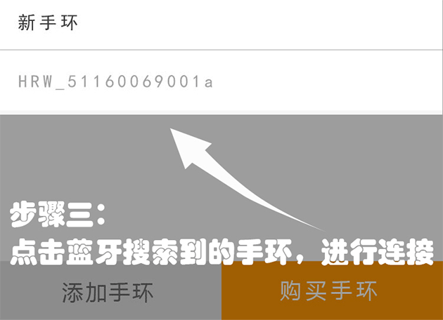
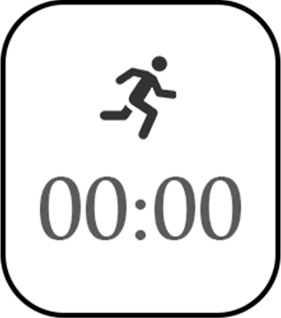

设备连接
a.点击主菜单“我”-“手环连接”，进入手环页面。
b.在手环页面点击“添加手环”。搜索到的手环编号将显示在“新手环”中。
c.在“新手环”中，点击手环编号，手环显示在“我的手环”中。
d.APP打开或在后台运行都会自动搜索并连接手环。

使用说明
手环基本操作
》
a.手环屏幕需单击点亮，无操作10s后自动关闭。
b.默认进入时钟页面，单击可循环切换不同页面。
c.双击锁屏，则显示屏长亮，便于长时间查看心率。
如何使用实时心率监测功能
》
开启实时心率监测
手环佩戴好后并且与APP匹配成功，进入课程播放页面，点击播放按钮，则开启实时心率监测。
查看实时心率监测
实时心率同步在APP课程播放页面上显示。
关闭实时心率监测
a.当退出APP课程播放页面时，则关闭了此次的实时心率监测。
b.在课程播放页面上点击“保存”按钮，存储此次实时心率数据。可在菜单栏切换到“训练日志”点击“运动心率”查看心率数据记录！
如何使用离线心率监测功能
》
开启离线心率监测
a.手环屏幕单击点亮后，单击手环按钮切换到心率页面。
b.长按手环按钮，切换到离线心率即时按钮（手环背面绿灯闪烁），则表示已开启此次的离线心率的心率监测。

关闭离线心率监测
手环屏幕单击点亮后，在离线心率计时页面上长按手环按钮，返回到计步页面（手环背面绿灯不在闪烁），则成功关闭了此次离线心率监测。
查看离线心率监测
手环与APP蓝牙连接匹配后，手环内的离线运动数据将自动导入。可在“训练日志”-“运动心率”中查看运动期间的心率数据！